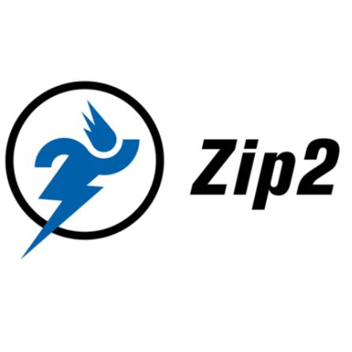
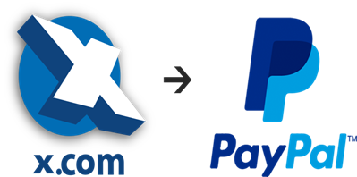
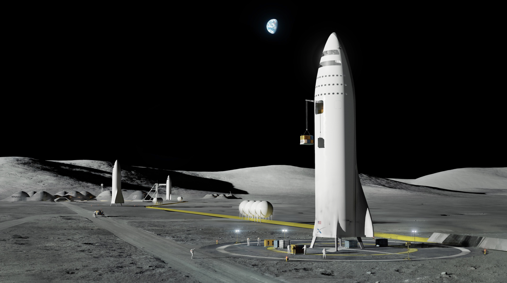
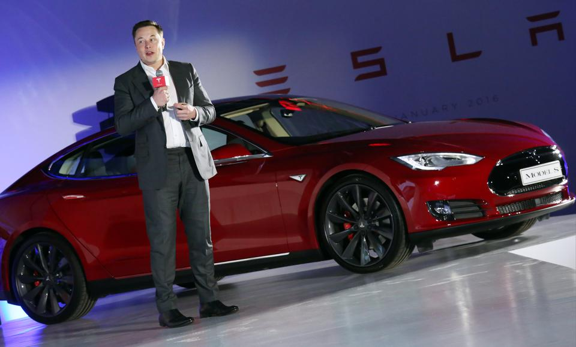

Elon launched his first company, Zip2, in 1995 alongside his brother, Kimbal Musk. Zip2 was an online city guide that was soon providing content to new websites like The New York Times and the Chicago Tribune. In 1999, a division of Compaq Compute
In 1999, Elon and Kimbal founded X.com (an online payments company) using the money they earned after selling Zip2. In October 2002, Elon earned his first billion when PayPal was acquired by eBay for $1.5 billion in stock.
In 2002, Elon founded SpaceX with the intention of building spacecrafts for commercial space travel. By 2008, SpaceX was well established, so much so that NASA awarded the company the contract to handle cargo transport for the ISS.
Elon Musk is the co-founder, CEO, and product architect at Tesla Motors, a company formed in 2003 that is dedicated to producing affordable mass-market electric cars, as well as battery products and solar roofs.
